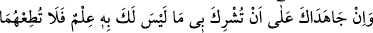

hayatta olduğu halde onlar için bir iyilik yapamazsa, onlar için istiğfar etsin ve
onların sevabına sadaka versin ki “anne-babasına iyilik yapan” olarak yazılabilsin.
Kim her Cuma günü anne-babasının veya ikisinden birinin kabrini ziyaret ederse,
onlara iyilik yapanlardan olur.”[81]
Başka bir hadîste ise şöyle buyrulur: “Kim Perşembe gecesi akşamla yatsı arasında
iki rekat namaz kılar, her rekatta bir defa Fatihatü’l-Kitâb suresini, beş defa Âyetü’l-
kürsîyi, beş defa ‘Kul hüvellahu ahad’ suresini, beşer defa da Muavvizeteyn (Felak ve
Nas) surelerini okursa; namazı bitirdiğinde de on beş kez Allâh’a istiğfar edip
sevabını anne-babasına bağışlarsa, üzerindeki anne-babasının hakkını edâ etmiş
olur. Anne-babasına âsî olmuş olsa bile durum böyledir. Allah Teâlâ ona sıddîklara
ve şehidlere verdiğini verir.”[82] Bu hadisler, el-İhyâ ve Kûtü’l-kulûb’da yer
almaktadır.
15. Eğer onlar seni, hakkında bilgin olmayan bir şeyi (körü körüne) bana ortak
koşman için zorlarlarsa, onlara itâat etme. Onlarla dünyâda iyi geçin. Bana
yönelenlerin yoluna uy. Sonunda dönüşünüz ancak banadır. O zaman size, yapmış
olduklarınızı haber veririm.
İnsana dedik ki: Anne-baban “eğer seni, hakkında bilgin olmayan bir şeyi,” kulluğa
hak sâhibi olma hususunda körü körüne “bana ortak koşman için zorlarlarsa” eğer
anne baban seninle mücadele ederse, şirk konusunda “onlara itâat etme.” Yâni anne-
babaya hürmet çok büyük bir şey ise de, masiyetlerde çocuğun onlara itâat etmesi
kesinlikle câiz değildir.
“__WORD__”, düşmana karşı koymada bütün gücünü ve imkânlarını kullanmak, birisiyle
Allah yolunda savaşmak, cihad etmektir.
Akrabanda dindarlık ve takvâ yoksa,
Yakınlık göstermektense sıla-i rahmi kesmek daha iyidir.
“Onlarla dünyâda” iyilik, infak ve benzeri gibi dinin râzı olacağı ve kerim olmanın
gerektirdiği gibi “iyi geçin.” musâhabe ve muâşeret et.
Bir hadîste şöyle buyrulur: “Onlarla iyi geçinmek; acıktıkları zaman doyurmak ve
ihtiyaçları nisbetinde onları giyindirmektir.”